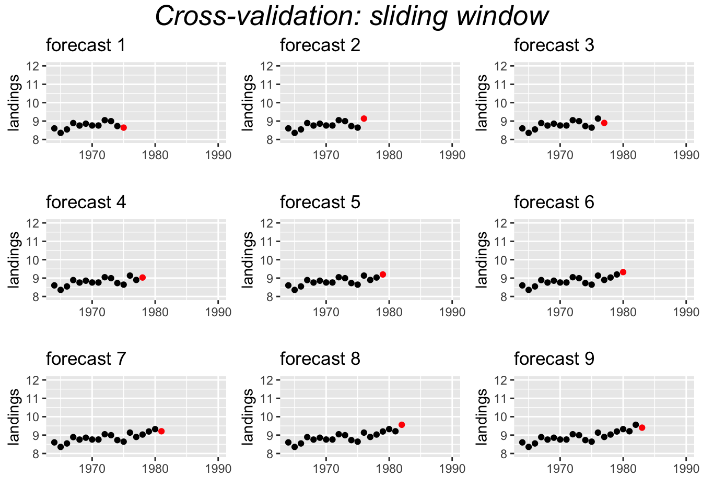

5.1 Measures of forecast accuracy
To measure the forecast fit, we fit a model to training data and test a forecast against data in a test set. We ‘held out’ the test data and did not use it at all in our fitting.
Stergiou and Christou used 1964-1987 as their training data and tested their forecasts against 1988 and 1989. This is a training set/test set approach to forecast performance evaluation.
5.1.0.1 Forecast versus actual
We will fit to the training data and make a forecast for the test data. We can then compare the forecast to the actual values in the test data.
fit1 <- forecast::auto.arima(traindat)
fr <- forecast::forecast(fit1, h=2)
fr## Point Forecast Lo 80 Hi 80 Lo 95 Hi 95
## 25 10.03216 9.789577 10.27475 9.661160 10.40317
## 26 10.09625 9.832489 10.36001 9.692861 10.49964Plot the forecast and compare to the actual values in 1988 and 1989.
plot(fr)
points(25:26, testdat, pch=2, col="red")
legend("topleft", c("forecast","actual"), pch=c(20,2), col=c("blue","red"))5.1.1 Metrics
How to we quantify the difference between the forecast and the actual values in the test data set?
fr.err <- testdat - fr$mean
fr.err## Time Series:
## Start = 25
## End = 26
## Frequency = 1
## [1] -0.1704302 -0.4944778The accuracy() function in forecast provides many different metrics such as mean error, root mean square error, mean absolute error, mean percentage error, mean absolute percentage error.
ME Mean err
me <- mean(fr.err)
me## [1] -0.332454RMSE Root mean squared error
rmse <- sqrt(mean(fr.err^2))
rmse## [1] 0.3698342MAE Mean absolute error
mae <- mean(abs(fr.err))
mae## [1] 0.332454MPE Mean percentage error
fr.pe <- 100*fr.err/testdat
mpe <- mean(fr.pe)
mpe## [1] -3.439028MAPE Mean absolute percentage error
mape <- mean(abs(fr.pe))
mape## [1] 3.439028accuracy(fr, testdat)[,1:5]## ME RMSE MAE MPE MAPE
## Training set -0.00473511 0.1770653 0.1438523 -0.1102259 1.588409
## Test set -0.33245398 0.3698342 0.3324540 -3.4390277 3.439028c(me, rmse, mae, mpe, mape)## [1] -0.3324540 0.3698342 0.3324540 -3.4390277 3.43902775.1.2 Test multiple models
Now that you have some metrics for forecast accuracy, you can compute these for all the models in your candidate set.
# The model picked by auto.arima
fit1 <- forecast::Arima(traindat, order=c(0,1,1))
fr1 <- forecast::forecast(fit1, h=2)
test1 <- forecast::accuracy(fr1, testdat)[2,1:5]
# AR-1
fit2 <- forecast::Arima(traindat, order=c(1,1,0))
fr2 <- forecast::forecast(fit2, h=2)
test2 <- forecast::accuracy(fr2, testdat)[2,1:5]
# Naive model with drift
fit3 <- forecast::rwf(traindat, drift=TRUE)
fr3 <- forecast::forecast(fit3, h=2)
test3 <- forecast::accuracy(fr3, testdat)[2,1:5]Show a summary
| ME | RMSE | MAE | MPE | MAPE | |
|---|---|---|---|---|---|
| (0,1,1) | -0.293 | 0.320 | 0.293 | -3.024 | 3.024 |
| (1,1,0) | -0.309 | 0.341 | 0.309 | -3.200 | 3.200 |
| Naive | -0.483 | 0.510 | 0.483 | -4.985 | 4.985 |
5.1.3 Cross-Validation
An alternate approach to testing a model’s forecast accuracy is to use cross-validation. This approach uses windows or shorter segments of the whole time series to make a series of single forecasts. We can use either a sliding or a fixed window. For example for the Anchovy time series, we could fit the model 1964-1973 and forecast 1974, then 1964-1974 and forecast 1975, then 1964-1975 and forecast 1976, and continue up to 1964-1988 and forecast 1989. This would create 16 forecasts to test. The window is ‘sliding’ because the length of the time series used for fitting the model, keeps increasing by 1.

Another approach uses a fixed window. For example, a 10-year window.
5.1.3.1 Time-series cross-validation with tsCV()
far2 <- function(x, h, order){
forecast::forecast(Arima(x, order=order), h=h)
}
e <- forecast::tsCV(traindat, far2, h=1, order=c(0,1,1))
tscv1 <- c(ME=mean(e, na.rm=TRUE), RMSE=sqrt(mean(e^2, na.rm=TRUE)), MAE=mean(abs(e), na.rm=TRUE))
tscv1## ME RMSE MAE
## 0.1128788 0.2261706 0.1880392Compare to RMSE from just the 2 test data points.
test1[c("ME","RMSE","MAE")]## ME RMSE MAE
## -0.2925326 0.3201093 0.2925326Cross-validation farther in future
Compare accuracy of forecasts 1 year out versus 4 years out. If h is greater than 1, then the errors are returned as a matrix with each h in a column. Column 4 is the forecast, 4 years out.
e <- forecast::tsCV(traindat, far2, h=4, order=c(0,1,1))[,4]
#RMSE
tscv4 <- c(ME=mean(e, na.rm=TRUE), RMSE=sqrt(mean(e^2, na.rm=TRUE)), MAE=mean(abs(e), na.rm=TRUE))
rbind(tscv1, tscv4)## ME RMSE MAE
## tscv1 0.1128788 0.2261706 0.1880392
## tscv4 0.2839064 0.3812815 0.3359689Cross-validation with a fixed window
Compare accuracy of forecasts with a fixed 10-year window and 1-year out forecasts.
e <- forecast::tsCV(traindat, far2, h=1, order=c(0,1,1), window=10)
#RMSE
tscvf1 <- c(ME=mean(e, na.rm=TRUE), RMSE=sqrt(mean(e^2, na.rm=TRUE)), MAE=mean(abs(e), na.rm=TRUE))
tscvf1## ME RMSE MAE
## 0.1387670 0.2286572 0.1942840All the forecasts tests together
comp.tab <- rbind(test1=test1[c("ME","RMSE","MAE")],
slide1=tscv1,
slide4=tscv4,
fixed1=tscvf1)
knitr::kable(comp.tab, format="html")| ME | RMSE | MAE | |
|---|---|---|---|
| test1 | -0.2925326 | 0.3201093 | 0.2925326 |
| slide1 | 0.1128788 | 0.2261706 | 0.1880392 |
| slide4 | 0.2839064 | 0.3812815 | 0.3359689 |
| fixed1 | 0.1387670 | 0.2286572 | 0.1942840 |